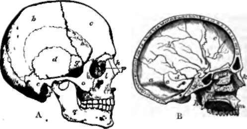

18. The Skull
Description
This section is from the book "Animal Physiology: The Structure And Functions Of The Human Body", by John Cleland. Also available from Amazon: Animal Physiology, the Structure and Functions of the Human Body.
18. The Skull
The Skull consists of cranium and face. The cranium, or part enclosing the brain, is counted as having eight bones. But it is right that even a tyro should understand that various of these bones consist of different elements which have become fused together at an early age, while some of what are considered as distinct bones are also fused together in every adult. The word " bone" is, therefore, used somewhat arbitrarily in speaking of the bones of the skull. The occipital bone forms part both of the base and the roof, and is pierced by the foramen magnum. The other bones of the roof are the two parietals and the frontal, which in the child is divided down the middle like the parietals. The frontal not only forms a large part of the vault of the skull, but also the roofs of the orbits or sockets of the eyeballs. In the base of the skull, a complex bone, the sphenoid, formed by the junction of many elements, and primarily divisible into an anterior and posterior part which are distinct in most animals, extends forwards from the occipital, with which it is thoroughly united in the adult, and reaches the orbital plates of the frontal; while the interval between the orbits is filled in by the upper part of a delicate and likewise complex bone, the ethmoid, which is pierced with foramina for the filaments of the nerves of smell, and takes much greater part in the formation of the cavity of the nose than in completing the cranial walls.
Lastly, on the sides of the skull, and projecting into its base between the sphenoid and occipital, are the temporal bonos, which contain the organs of hearing in their interior. The part of the temporal which lies above the external auditory meatus, or opening of the ear, is termed the squamous portion; the thick process behind is called mastoid; the pyramidal projection into the base is the petrous portion; and a plate which forms the inferior limit of the opening of the ear, and of the cavity into which it leads, is the tympanic plate. Enclosod by this plate, within what is called the tympanic cavity, are three little ossicles, which will be described with the organ of hearing.
Fig. 17. Skull. A, Profile view. B, Vertical section, a, occipital bone; b, parietal; c, frontal; d, squamous portion of temporal; e, mastoid portion ; f, petrous portion; g, sphenoid ; h, pterygoid process of sphenoid; i, ethmoid; k, nasal; l, superior maxillary; m, pre-maxillary part of superior maxillary; n, palatal; o, malar; p, lachrymal; q, inferior maxillary; r, inferior turbinated.
19. Of the face bones, the largest is the inferior maxilla, or lower jaw, and this is the only one which is movably articulated. The remaining part of the face consists mainly of the walls of a passage, the interior of which is divided into the right and left nasal fossse by a mesial bone called the vomer, together with a mesial plate of the ethmoid. The floor of this passage constitutes the palate. Much the larger part of this division of the face in the human subject is formed by the superior maxillary bones, which carry all the upper teeth, and represent two pairs of bones in the skulls of other mammals, namely, the superior maxillaries and the pre-maxillaries. Behind the superior maxillaries are the palatals, which form the back part of the palate, and, by means of ascending portions, join together the superior maxillaries and what are called the pterygoid processes of the sphenoid bone, two processes projecting downwards from the base of the skull. It may also be mentioned that the inner parts of these processes, namely, the internal pterygoid plates, are separate bones in most animals. The superior maxillaries send up a pair of processes to the frontal bone, behind the two nasals, the bones forming the ridge of the nose; but they get a much stronger support from a pair of cheek bones, the jugals or malars, which project outwards from them, and each of which sends one process up to the frontal to complete the outer wall of the orbit, and another backwards to form an arch with what is called the zygomatic process of the temporal. The other bones of the face are two little plates called lachrymals, grooved for the nasal ducts, the passages by which the tears are carried from the eyes into the nose; and the inferior turbinated bones, a pair of thin curved laminæ which project into the nasal fossæ.
Continue to:
- prev: 17. The First And Second Cervical Vertebræ
- Table of Contents
- next: 20. Peculiarities Of The Human Skeleton